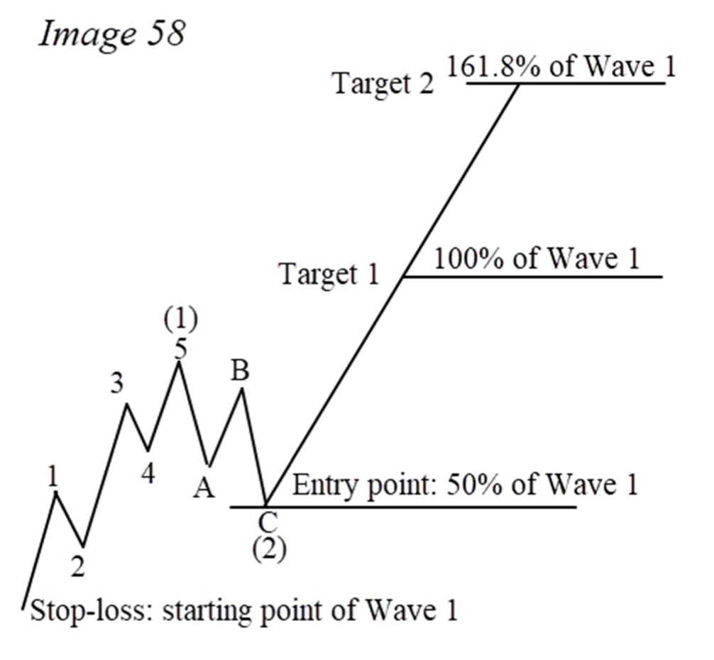
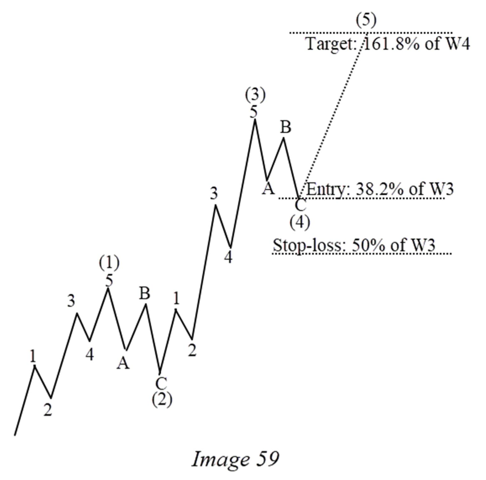
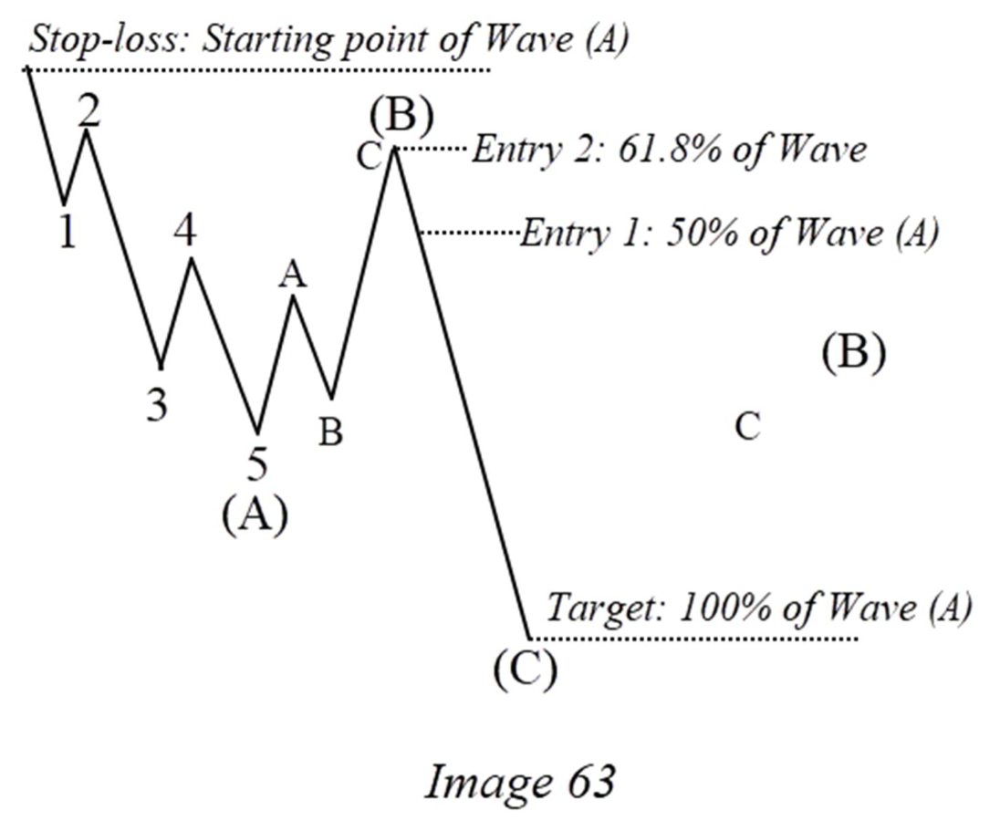

CHAPTER V · PDF tr. 77–90
HOW TO TRADE WITH ELLIOTT WAVE Cách giao dịch theo phương pháp trong sách
Đọc trang 77–90 trong PDF, theo các mục dưới đây, rồi làm 16 câu hỏi của riêng chương này. Nội dung dưới đây là tóm lược đọc hiểu, không thay thế toàn chương gốc.
1. Conservative Trading Style How To Trade Impulsive Wave #3 — Conservative How To Trade Impulsive Wave #5 — Conservative How to Trade Corrective Wave C — Conservative 2. Aggressive Trading Style How To Trade Impulsive Wave #3 — Aggressive How To Trade Impulsive Wave #5 — Aggressive How To Trade Corrective Wave C — Aggressive Trắc nghiệm (16 câu)
1. Conservative Trading Style PDF tr. 77–78
Tác giả giới hạn tần suất conservative, yêu cầu cùng xu hướng lớn, nêu R/R tối thiểu 1:3 và các khung 1H/4H/Daily. Đây là policy của sách, không phải khuyến nghị giao dịch cá nhân.
How To Trade Impulsive Wave #3 — Conservative PDF tr. 78–80
Chuẩn bị sau wave 1 có năm sóng con. Theo dõi entry hồi 50% wave 1, stop tại gốc 1 và các target chiếu từ cuối 2; đọc thêm quản lý ở target đầu.

Steve Sinclair · Image 58 · PDF tr. 79 · Trích hình để đối chiếu phần đang học; nhãn gốc của tác giả. How To Trade Impulsive Wave #5 — Conservative PDF tr. 80–81
Chuẩn bị sau wave 3. Sách dùng hồi 38,2% của 3, hoặc 23,6% khi 3 extended; stop 50% của 3 và target inverse 161,8% của 4.

Steve Sinclair · Image 59 · PDF tr. 81 · Trích hình để đối chiếu phần đang học; nhãn gốc của tác giả. How to Trade Corrective Wave C — Conservative PDF tr. 81–83
A cần có năm sóng con; theo dõi hồi 50% A, stop tại gốc A và target 100% A chiếu từ cuối B.
2. Aggressive Trading Style PDF tr. 83–84
Phần aggressive nêu tần suất 2–3 giao dịch/ngày, R/R tối thiểu 1:2 và khung 15/30 phút. Chỉ ghi nhận sự khác biệt của policy, không áp mức risk thành lời khuyên.
How To Trade Impulsive Wave #3 — Aggressive PDF tr. 84–86
Hai entry tại 50% và 61,8% wave 1, cùng gốc 1 làm stop. Target vẫn dùng 100% và 161,8% wave 1 chiếu từ cuối 2.
How To Trade Impulsive Wave #5 — Aggressive PDF tr. 86–88
Hai entry tại 23,6% và 38,2% wave 3; stop 50% wave 3. Target theo inverse 123,6% và 161,8% wave 4.
How To Trade Corrective Wave C — Aggressive PDF tr. 88–90
Hai entry tại 50% và 61,8% A; stop tại gốc A; target 100% A chiếu từ cuối B. So với conservative, giữ các anchors và chỉ ra số entry thay đổi.

Steve Sinclair · Image 63 · PDF tr. 89 · Trích hình để đối chiếu phần đang học; nhãn gốc của tác giả. Lưu ý khi đối chiếu nguồn Các câu tóm tắt 'Best Waves' và một số từ ngữ của sách không khớp hoàn toàn các mục chi tiết 3/5/C. Câu hỏi dùng mục chi tiết, không yêu cầu học thuộc mâu thuẫn. PDF tr. 77–84 Phần trăm rủi ro do tác giả nêu không phải khuyến nghị của khóa. Trắc nghiệm kiểm tra entry/stop/target và cách tiếp cận, không khuyến khích áp tỷ lệ đó vào tài khoản. PDF tr. 78–84 Trắc nghiệm chương V Chỉ hỏi nội dung thuộc trang 77–90. Chọn một đáp án mỗi câu rồi chấm; câu chưa trả lời tính là chưa đúng. Lời giải có trang kiểm tra lại.
1. Conservative yêu cầu quan hệ nào với xu hướng lớn? PDF tr. 77–78
A. Luôn ngược xu hướng B. Cùng hướng xu hướng lớn C. Không quan tâm xu hướng
2. R/R tối thiểu trong policy conservative của sách là gì? PDF tr. 78
A. 1:1 B. 1:2 C. 1:3
3. Entry conservative wave 3 nằm tại đâu? PDF tr. 79 · Xem hình liên quan trong bài
A. Hồi 50% wave 1 B. Hồi 90% wave 3 C. Đỉnh wave 5
4. Stop conservative wave 3 lấy mốc nào? PDF tr. 79
A. Cuối wave 3 B. Gốc wave 1 C. RSI 30
5. Target wave 3 được chiếu như thế nào? PDF tr. 79
A. 50% của 2 từ cuối 5 B. 90% của B từ cuối A C. 100% và 161,8% của 1 từ cuối 2
6. Theo tips wave 3, khi đạt target 100%, tác giả đề nghị gì với stop? PDF tr. 79–80
A. Đưa về entry/break-even B. Bỏ stop C. Nới stop gấp đôi
7. Entry conservative wave 5 thông thường và ngoại lệ extended 3 là gì? PDF tr. 80
A. 50% và 61,8% wave 1 B. 38,2% wave 3; 23,6% nếu 3 extended C. 90% wave A; 100% nếu A extended
8. Stop conservative wave 5 được đặt theo mức nào? PDF tr. 81 · Xem hình liên quan trong bài
A. Gốc wave A B. 161,8% wave 1 C. Hồi 50% wave 3
9. Target conservative wave 5 theo sách là gì? PDF tr. 81
A. Inverse 161,8% wave 4 B. Hồi 50% wave 1 C. RSI bằng 100
10. Conservative wave C: entry và stop dùng anchors nào? PDF tr. 82
A. Hồi 50% wave 3; stop cuối 4 B. Hồi 50% A; stop gốc A C. Hồi 90% B; không stop
11. Target conservative wave C dùng phép chiếu nào? PDF tr. 83
A. 161,8% của 3 từ cuối 4 B. 50% của B từ gốc A C. 100% A từ cuối B
12. R/R tối thiểu trong policy aggressive của sách là gì? PDF tr. 84
A. 1:2 B. 1:3 C. 2:1
13. Hai entry aggressive wave 3 ở đâu? PDF tr. 85
A. 23,6% và 38,2% wave 3 B. 50% và 61,8% wave 1 C. 100% và 200% wave 4
14. Hai entry aggressive wave 5 ở đâu? PDF tr. 87
A. 50% và 61,8% wave A B. 90% và 100% wave 2 C. 23,6% và 38,2% wave 3
15. Hai target aggressive wave 5 theo sách là gì? PDF tr. 87
A. Inverse 123,6% và 161,8% wave 4 B. 50% và 61,8% wave 1 C. 90% và 100% wave B
16. Aggressive wave C: bộ entry/stop/target nào đúng theo mục chi tiết? PDF tr. 88–89 · Xem hình liên quan trong bài
A. Entry 23,6/38,2% của 3; stop 50% của 3; target inverse 4 B. Entry 50/61,8% A; stop gốc A; target 100% A từ cuối B C. Entry RSI 30; stop RSI 0; target RSI 70
Chấm bài và xem giải thích Làm lại chương này Tải câu trả lời JSON In chương
Chưa chấm.
Lựa chọn được lưu riêng cho khóa theo chương trên trình duyệt này.
Cần bật JavaScript để chấm và lưu câu trả lời. Bạn vẫn có thể đọc chương và mở PDF gốc.
Điểm là kết quả đọc hiểu tài liệu, không phải chứng nhận đếm sóng hay hiệu quả giao dịch.
← Chương IV Chương VI →